Usage
gcdquo(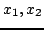)
gcdquo [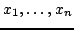]
Signatures
gcdquo: (%,%) (%,%,%)
gcdquo: List %
| Parameter | Type | Description |
|---|---|---|
| 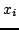 | % | Elements of the ring |
Returns
gcdquo() returns 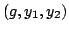 where 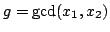, 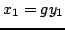 and 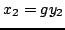,
gcdquo( 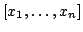) returns 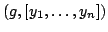 where 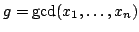 and 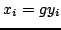.
Remarks
With certain types, for example polynomials, the n-ary version can be more efficient than iterating the binary version.
See Also
gcd